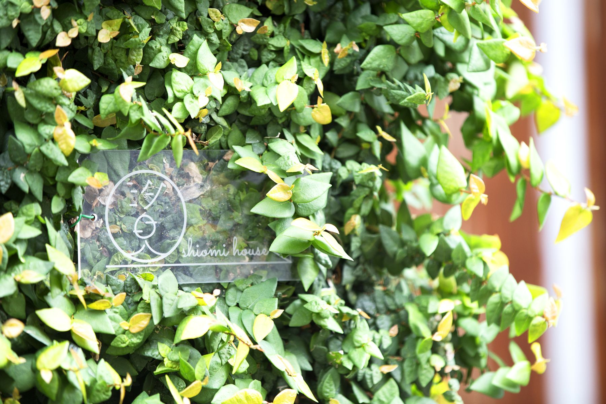

アクセス
しまなみ海道の少し東にある離島です。どこかで必ず船に乗ります。

汐見の家は、瀬戸内海を渡るしまなみ海道の少し東、佐島にあります。離島なので、どこかで必ず船に乗ります。一番短い航路はたった3分ですが、対岸にはゆったりした島時間が待っています。
乗り継ぎが悪いと2時間待つこともあります。不便も旅の楽しみですが、事前にご相談いただければ、その日に合う道順をご提案します。
主な道順
目的地は「佐島港」です。乗換案内で検索するときも、この名前で入れてください。
- 尾道・福山から
- バスで因島の土生（はぶ）港へ。土生港から芸予汽船の船で佐島港。
- 今治・松山から
- 今治桟橋まで出て、芸予汽船の船で佐島港。松山からはJRかバス、リムジンバスで今治へ。
- 広島空港・三原から
- 三原港から土生商船の高速船で生名島の立石港へ。立石港から町有バス、または自転車で佐島へ。橋で繋がっています。
- しまなみ海道・生口島から
自転車の方向け - 生口島の洲江（すのえ）港から船で、岩城島の小漕（こぎ）港へ。そこから佐島までは橋を渡って自転車で。しまなみ海道を走っている途中で立ち寄るなら、この道順が早いです。
平日はオンデマンドバスもありますが、公共交通機関でお越しの方は、上の3つのいずれかをお使いください。 - 佐島港から
- 徒歩2分です。港を背に、集落の路地へ入ってすぐ。
運賃と時刻はこのページには載せていません。変わることがあるためです。最新の時刻表と運賃は、各社のサイトでご確認ください。分かりにくいときはお気軽にお問い合わせください。
船とバス
- 芸予汽船
- 今治桟橋・佐島港・弓削港・土生港を結ぶ航路
- 土生商船
- 三原港・生名島（立石港）・土生港を結ぶ高速船
- 上島町有バス
- 生名島・佐島・弓削島の島内路線
- せとうち交流館
- 弓削港から徒歩1分。レンタサイクル

サイクリングで来る方へ
しまなみ海道を走る方、ライダーの方も歓迎です。貸自転車もあります。
レンタサイクルを借りる場合は、佐島の手前の弓削島で借りると便利です。佐島と弓削島、生名島は橋で繋がっています。
所在地
- 住所
- 〒794-2520
愛媛県越智郡上島町弓削佐島299 - お電話
- 0897-72-9800
- 最寄り
- 佐島港から徒歩2分
長く空き家だったため、地図に番地が登録されていないことがあります。その場合は「古民家ゲストハウス汐見の家」で検索してください。
泊まりに来ませんか
道順が分かりにくいときは、遠慮なくお問い合わせください。